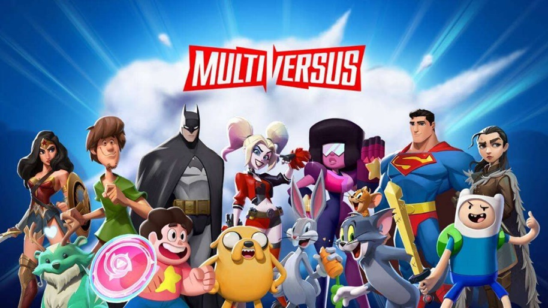
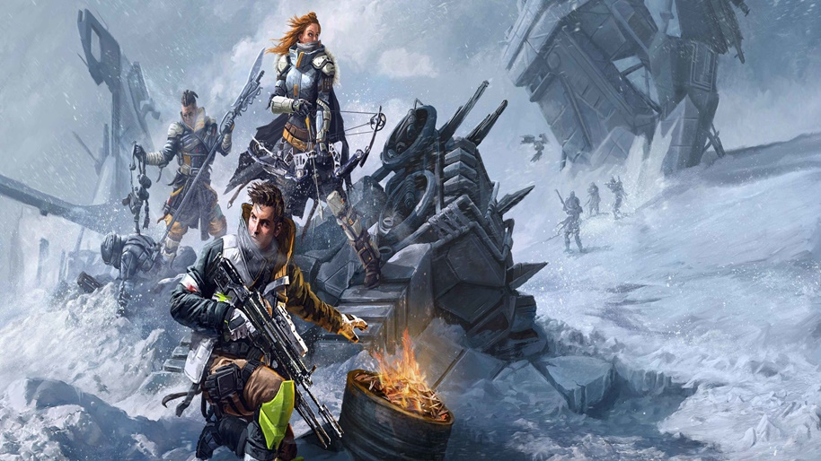

1. Dragon Ball Xenoverse 2

Dragon Ball Xenoverse 2 é um jogo de videogame do gênero de luta e de RPG; desenvolvido pela Dimps e publicado pela Bandai Namco Entertainment. Baseado na franquia Dragon Ball, é uma sequência de Dragon Ball Xenoverse. O jogo foi anunciado em 17 de maio de 2016 para PC, Xbox One e PlayStation 4.
oferecendo aos jogadores a melhor experiência DRAGON BALL! Desenvolva seu próprio guerreiro, crie o avatar perfeito, treine para aprender novas habilidades e ajude a combater novos inimigos para restaurar a história original da série DRAGON BALL. Junte-se a 300 jogadores ao redor do mundo na nova cidade de Conton e lute ao lado deles ou até mesmo contra eles.
Nintendo Switch, PlayStation 4, Xbox One, Microsoft Windows, Google Stadia
Trailer Oficial2. Roller Champions

Roller Champions é um jogo esportivo gratuito desenvolvido pela Ubisoft Montreal e publicado pela Ubisoft lançado em 25 de maio de 2022 para Microsoft Windows, PlayStation 4 e Xbox One.
É um novo game de esporte da Ubisoft Montreal que apresenta um esporte fictício onde elementos de patinação Roller Derby são misturados com basquete. As partidas são disputadas online em arenas circulares em que dois times de três jogadores cada tentam marcar pontos ao arremessar uma bola em um arco. A seguir, veja as principais perguntas que usuários podem ter sobre o novo game, como quais as regras, se tem crossplay ou é possível jogar offline, além das plataformas em que está disponível.
Trailer Oficial3. Knockout City

Knockout City é um videogame de ação desenvolvido pela Velan Studios. A editora Electronic Arts lançou o jogo para Microsoft Windows, Nintendo Switch, PlayStation 4 e Xbox One em maio de 2021 sob seu selo EA Originals.
Personalize seu personagem e junte-se aos seus amigos para dominar Knockout City. Elimine seus adversários com lances precisos e trabalho em equipe, desviando e lançando bolas pelo mapa. Ficou sem bola? Não tem problema! Você pode literalmente se abaixar, rolar para as mãos dos seus colegas e se tornar a arma definitiva!
Trailer Oficial4. Multiversus
MultiVersus é um futuro jogo eletrônico de luta crossover desenvolvido pela Player First Games e publicado pela Warner Bros. Interactive Entertainment. O jogo será gratuito para jogar e apresenta vários personagens dentro do catálogo da Warner Bros. Discovery.
um jogo de combate com plataformas, onde podes fazer equipa com amigos ou jogar contra eles, utilizando os personagens mais emblemáticos, como Batman, Shaggy, Superman, Bugs Bunny e muito mais.
Disponivel para PlayStation 4, Xbox One, PlayStation 5, Xbox Series X e Series S, Microsoft Windows
Trailer Oficial5. scavengers
Scavengers é seu campo de batalha de sobrevivência estratégica. Entre em um jogo de tiro e ação gratuito, em que equipes de três competem para sobreviver e dominar em um híbrido de uma modalidade PVE em estilo sandbox e PVP baseada em classe. Escolha a partir de uma lista de Exploradores customizáveis, equipe-se com uma combinação de habilidades e armamento únicos e vença os desafios de um deserto hostil. Supere a estratégia e a força dos jogadores inimigos e dos habitantes da Terra congelada.
Disponivel para PlayStation 4, Xbox One, Microsoft Windows
Trailer Oficial